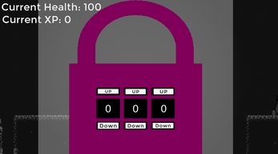

Aria's Canvas
Aria's Canvas is an innovative gameplay experience focused on artistic mechanics and exploration. Dive into a world where creativity drives progress, and every stroke of your brush shapes the environment.
The Game
The game follows a character struggling with anxiety and depression, moving through a dark, gloomy world. They collect power-ups representing mental health coping strategies such as exercise, problem solving, or humour, gradually making the world brighter and smoother.
Enemies represent mental health challenges, and puzzles require creative thinking. The goal is to overcome challenges and build emotional resilience to reach the end. The game has an uplifting story and visual arc to show perseverance and seek help for mental health. The game uses a dark, lo-fi soundtrack to feature within it, and has a stylized art style.
Characters
Main Character: Aria
Once a vibrant artist, Aria's world dimmed with the onset of anxiety and depression. Her canvas has remained blank for months. Aria has a monochrome palette, with hints of color that start to weave into her clothing as she collects power-ups. Her posture and expressions evolve from slouched and downcast to upright and determined. Aria has the unique ability to see 'cracks' in the gloomy world where she can paint streaks of light, revealing hidden paths and solutions. Throughout the game, Aria learns to harness different coping strategies, which not only aid her journey but also manifest as vibrant tattoos on her arms, symbolizing her growth and emotional resilience.
Enemy: The Shadow
The Shadow is an embodiment of Aria's inner doubts and fears, always lurking behind her. A shape-shifter made of dark mist, with red eyes that are the only color on it. It takes on forms that mirror Aria's deepest insecurities. It sends out waves of darkness to overwhelm Aria, representing panic attacks or depressive episodes that she must fend off with her coping strategies.
Enemy: The Echo
The Echo is the voice of past failures and negative self-talk that haunts Aria. An ethereal figure that mirrors Aria's movements but is fractured as if seen in a broken mirror. It repeats Aria's movements but in a distorted way, creating puzzles that Aria must solve by breaking the pattern and asserting her own path.
Story
Delving Deeper is a section of the game that follows Aria, surrounded by a monochrome world. The game's environment is initially a monochrome landscape reflecting Aria's inner turmoil. As they navigate, they discover power-ups like the Brush of Bravery and the Palette of Positivity, which offer coping mechanisms. As they collect these power-ups, the world regains color, and Aria's appearance transforms, indicating a growing sense of confidence and control.
Aria faces two main adversaries: The Shadow, a manifestation of their darkest thoughts, and The Echo, a spectral figure that distorts Aria's reality. Each encounter strengthens Aria's resolve, and their tattoos represent the strategies they've mastered and the obstacles they've overcome.
The game ends with a final confrontation where Aria must use all their coping strategies to vanquish The Shadow and silence The Echo, liberating themselves from their anxiety and depression. In the end, Aria stands in a world reawakened with color, a testament to their journey, the importance of seeking support, and the triumph of overcoming mental health challenges. Their story serves as a beacon of hope, reminding players that even in the darkest moments, there is a path to joy and illumination.
Watch the Trailer